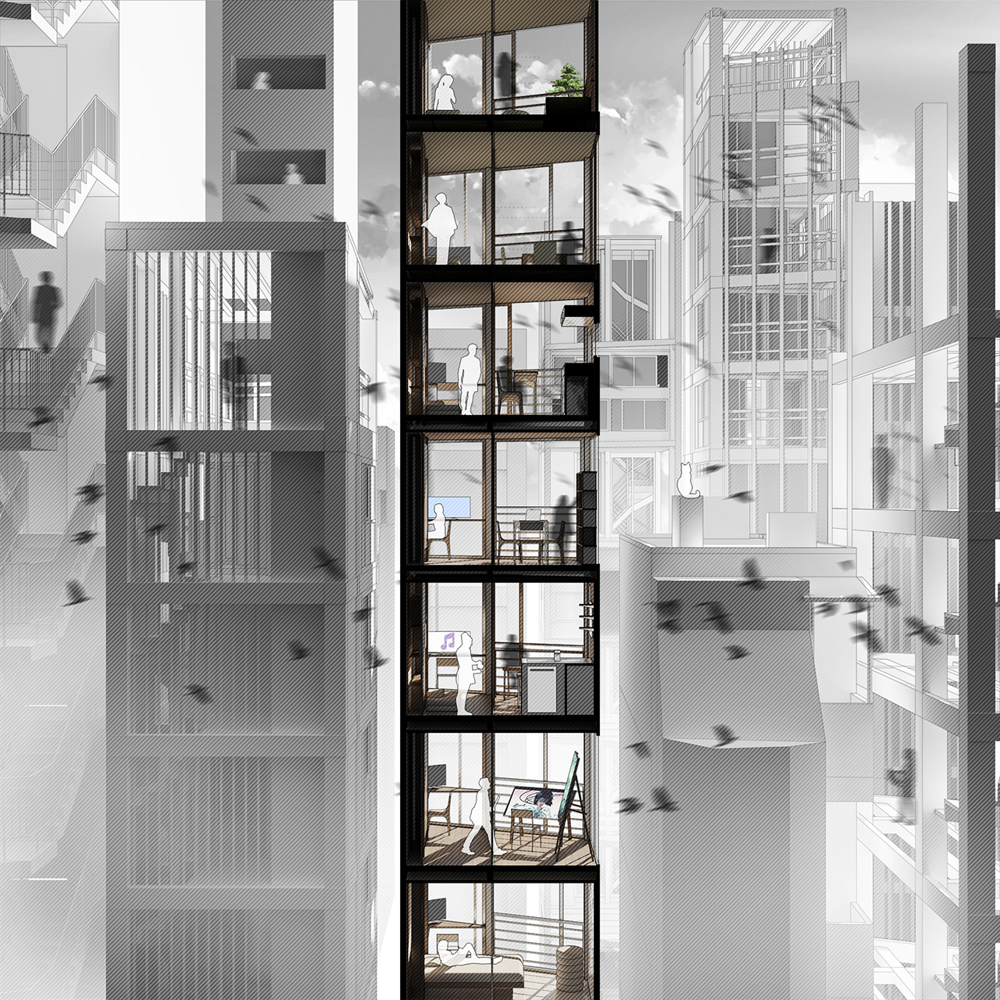

PENCIL BUILDING/ HOME EXTENSION
As a vernacular typology developed from the city's socio-economic games of land subdivision,
pencil building reached its highest market value in 2030, for the one-unit-per-floor layouts appealing to
both the physically unsecured digital generation and the social distancing enforcements by Tokyo Health.
Nevertheless, the frequent L4 lockdowns have turned some pencil building conditions against their design purposes.
While these buildings continue to pop up with governmental subsidies (and persistently grow taller with Mitsubishi's
graphene building printers adding new floors atop), the idea of creating sharable rooms for multi-personal activities
seems not uncommon among the inhabitants.
Jimbocho Pencil Building Co.'s Home Extension program demonstrates a
legal form of shared rooms by making temporary open-air spaces within the units; some other communities have gone
much wilder against the lockdowns. On the other hand, it is hard to tell whether these home extensions reclaimed
the long-lost physical sense of neighborhood, as people rarely even ask their next floors' names when visiting each
other's sharable space for 'something randomly interesting.'
Historical Photo: A Ueno Pencil Building in 2018
The One-Unit-Per-Floor Paradigm
Home Extension Registration Note
The 3F guy has opened a bar to his next floors...
 Legal Sharing: The Owner-Guest Dividers
Lockdown... at least from the streetview
After lockdowns, hopefully...